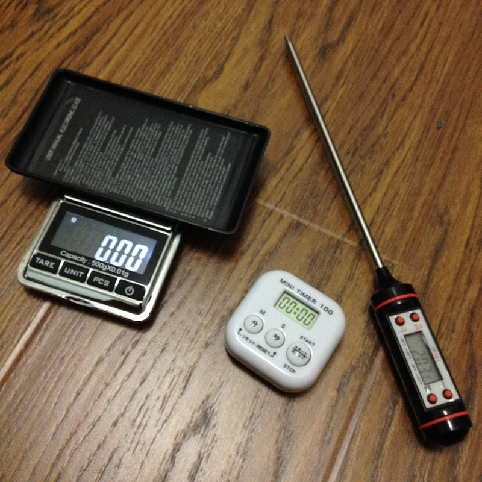
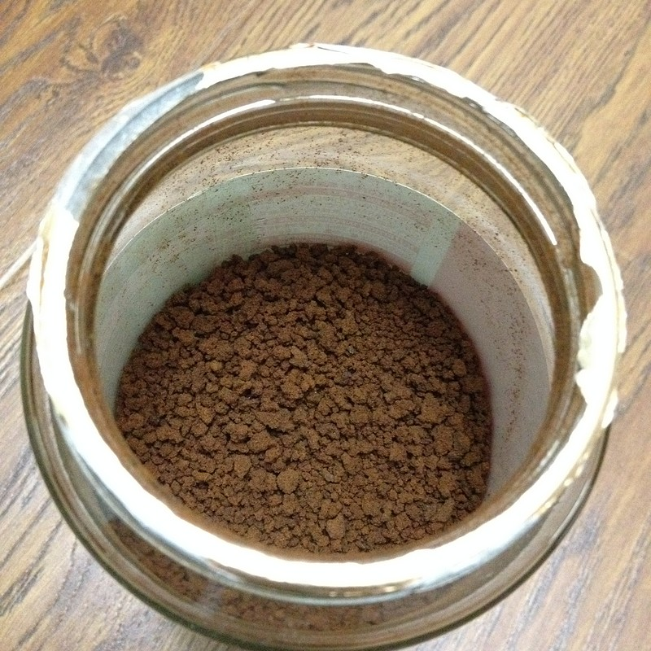
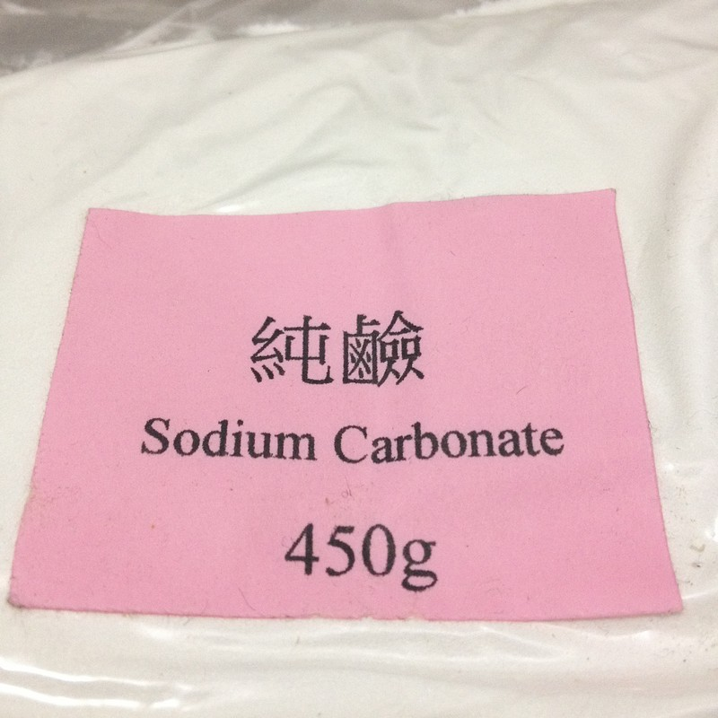
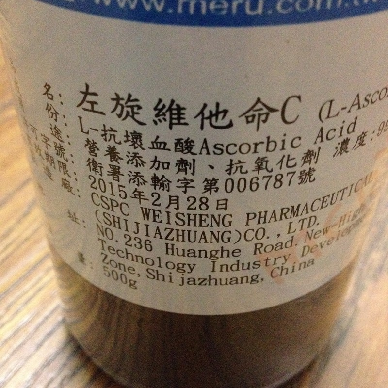
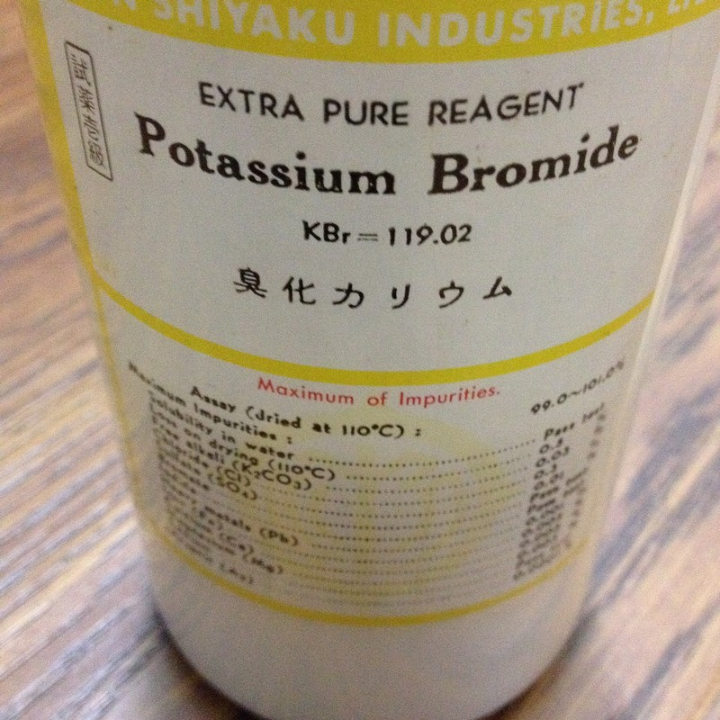
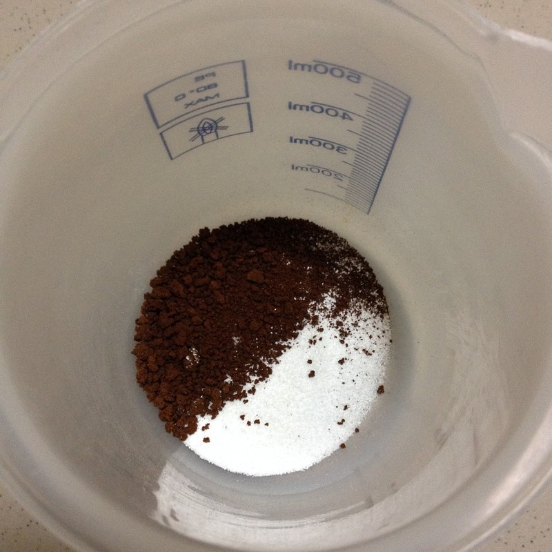
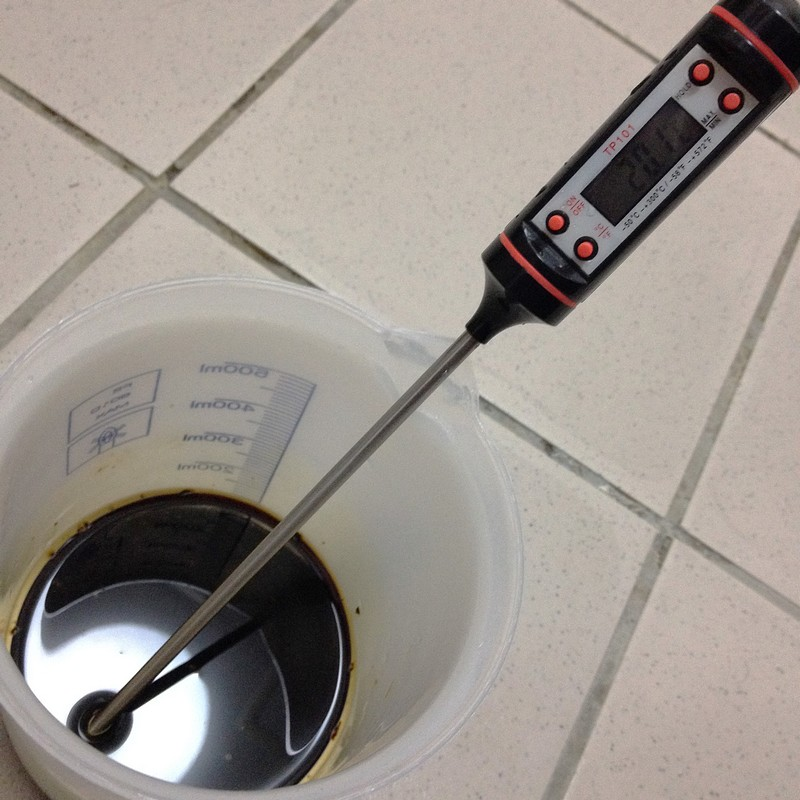
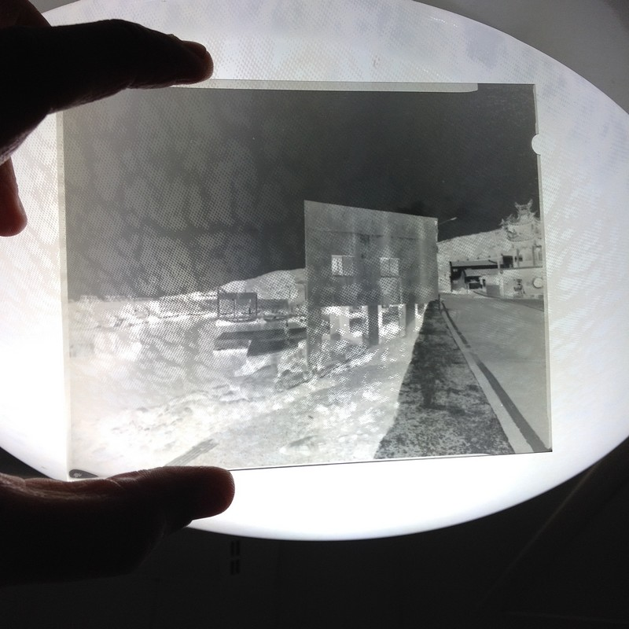

咖啡顯影 Caffenol
幾年前在偶然機會中，接觸到咖啡顯影的資訊，在對暗房一無所知的情形下，照著網路上得來的資訊依序操作，竟然也成功沖出影像，對於首次體驗手沖底片的筆者來說，那種興奮的感覺實在不可言喻，當時還撰寫了一篇咖啡顯影的文章，隨著時間過去，世事變換，筆者自己手沖底片的次數和經驗慢慢累積，對於沖片過程所需的各項控制，也比較有概念，為了讓咖啡顯影更具參考價值，這篇文章將會把筆者陸續於網路上所得知有關的資訊及心得做個紀錄。筆者從網路上所知咖啡顯影劑有3種配方，Caffenol-CM、Caffenol-CH及Caffenol-CL，Caffenol-CM適用低速到中速底片（即ISO值100以下），Caffenol-CH適用ISO值100以上底片，Caffenol-CL則適用於靜置式顯影，以下為每1公升的水調配成咖啡顯影劑時，各種所需成份的用量。
| 無水蘇打（Soda,waterfree） | 維化命C（Vitamin-C） | 咖啡（Instant Coffee） | 溴化鉀（Potassium Bromide） | |
| Caffenol-CM | 54公克 | 16公克 | 40公克 | 不需要 |
| Caffenol-CH | 54公克 | 16公克 | 40公克 | 1公克 |
| Caffenol-CL | 16公克 | 10公克 | 40公克 | 1-2公克 |
除了「咖啡」以外，主要成份有「無水蘇打（Soda,waterfree）」、「維化命C（Vitamin-C）」和「溴化鉀（Potassium Bromide）」，其中「無水蘇打」和「咖啡」兩項為必要成份，只要有這兩項，其實就可以做出咖啡顯影劑，而維化命C可以大幅提升咖啡顯影後底片的清晰度，至於最後一項溴化鉀則是讓咖啡顯影劑可以應用在ISO值高於100以上的底片，並減輕底片霧翳的情況，可以參酌使用。
為了要精準調配顯影劑各項成份，下圖中左1的電子秤是必須的，最好選擇量測精度到小數點2位數的電子秤，其敏感度較高，誤差較小；其次是沖片時的溫控，原則上沖片溫度是20正負1度，下圖中右1的指針式溫度計，相信許多自己沖片的攝影同好手邊都有1支；最後是時間的控制，在20度的沖片溫度下，Caffenol-CM和Caffenol-CH皆為15分鐘，Caffenol-CL則是1小時以上，筆者是用下圖中簡易的電子計時器。

主角—「咖啡」，用即溶咖啡，不要有糖的，以免沖完底片還惹來一堆螞蟻。

第2主角—無水蘇打（Soda,waterfree），在各地的化工材料行問，店家通常會拿這個—純鹼—出來，它就是了。

接下來是維他命Ｃ，在各地的化工材料行問也有得賣，記得不要買食用的維他命Ｃ粉，會非常貴，這一項也是所有成份中價格最高的。

溴化鉀，一樣在化工材料行可以買到。

所有材料備齊後，依上面的配方比例將它們調和在一起，準備加水調成咖啡顯影劑，在臺灣，由於自來水管老舊，建議用濾水器過濾的水來沖片，以減低水質對底片品質的影響。

經過澈底的攪拌後，所有的材料已溶為我們所要的咖啡顯影劑，剛攪拌好後，可以等個幾分鐘讓泡沬消去，但咖啡顯影劑調好後最佳效力為30分鐘內，因此也不要等太久，將溫度控制在20.1度，接著就可以進入一般沖片的程序了。

依一般的沖片程序，將底片預濕完成後，接著開始顯影，由於咖啡顯影劑是慢速顯影劑，顯影時間約需15分鐘，因此一開始倒入顯影劑的時間不必像其它時間短促的顯影劑般手忙腳亂，但還是建議能於10秒鐘內倒入完成最好，急制的部分，只要用清水就可以了，稍微用點肥皂水也可以，定影和去海波就依所使用的定影劑指示操作，最後再水洗幾分鐘，泡完水斑液就可以將底片吊起來晾乾了，以下是剛沖好還未吊掛晾乾的4x5底片。

底片晾乾後掃描出來的影像，和幾年前原始的咖啡顯影劑配方相比，染色的程度較輕微。

本文所提到的3種咖啡顯影劑配方，和一般正規的顯影劑比起來，在沖好的底片厚度和底片顆粒方面，可能無法相提並論，但以它的方便易保存來說，仍具有相當的實用性，筆者主要用來搭配4x5底片針孔相機，拍攝本網站的「主題作品線上觀賞」裏「Project5 21世紀‧臺灣 21st Century‧Taiwan」這個系列主題，營造和正規底片沖洗不同的視覺效果，在4x5底片上，顆粒本身不是什麼問題，咖啡顯影劑和針孔相機不完美的成像相比之下，也可說是適得其所了。
另外，筆者其實也曾經將135黑白底片以咖啡顯影劑試過，結果其實並不差，甚至拿135彩負來作咖啡顯影成黑白，以下為個人flickr照片連結，供各位讀者參考。
Bergger BRF400 Plus與咖啡顯影
Agfa APX100與咖啡顯影
Cross Processing－C-41 to BW（彩負之黑白顯影與咖啡顯影）
咖啡顯影（全）
回首頁 Back to Home 回攝影雜文目錄